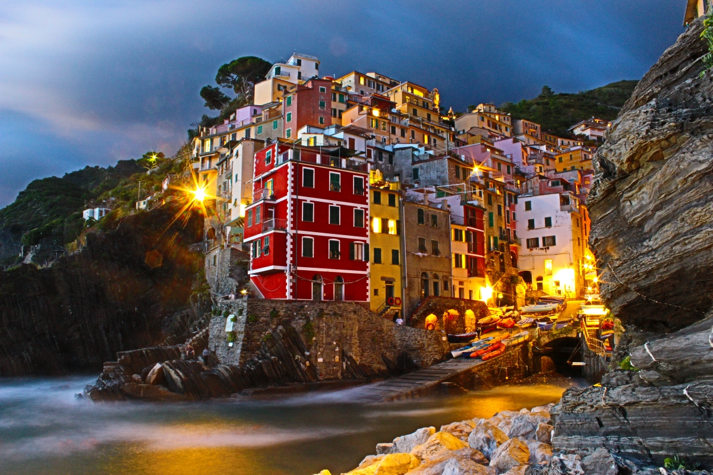
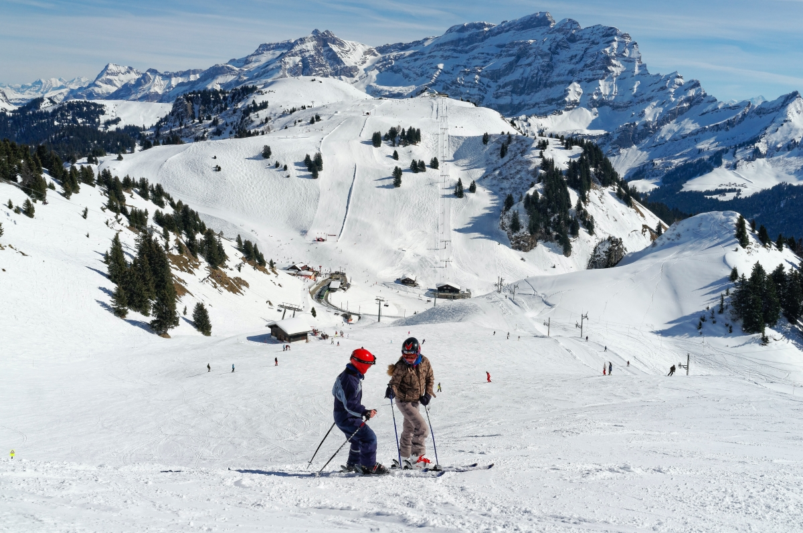
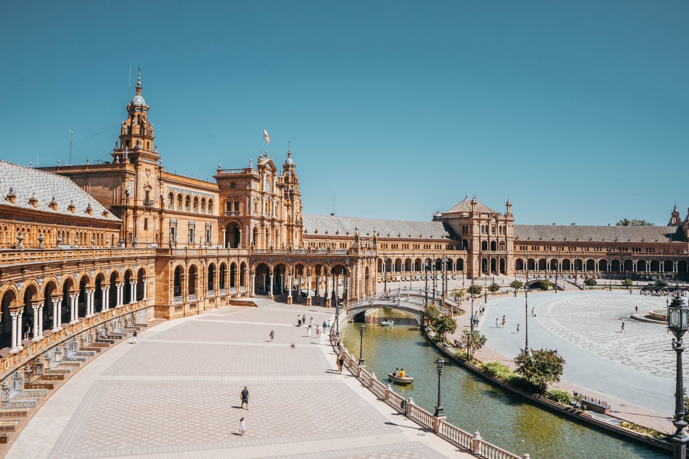

Mijn top 3 favoriete locaties
Tijdens de reis zijn we langs heel veel leuke plekken gekomen. Ik heb een top 3 gemaakt van mijn favoriete locaties waar ik langs ben gekomen gedurende de reis:
1. Riomaggiore

Riomaggiore, een van de vijf betoverende dorpen die deel uitmaken van de Cinque Terre aan de Italiaanse kust, is als een ansichtkaart die tot leven komt. Gelegen in de regio Ligurië, biedt dit schilderachtige dorp een adembenemend uitzicht op de azuurblauwe Middellandse Zee en de dramatische kliffen die de kustlijn sieren.
Riomaggiore wordt gekenmerkt door zijn kleurrijke huizen die tegen de heuvels lijken te zijn geplakt en smalle geplaveide straatjes die zich een weg banen door het dorp. De haven is het centrale punt, waar vissersboten schommelen op het ritme van de golven en waar u kunt genieten van verse zeevruchten in de gezellige restaurants aan het water.
Wandelaars en natuurliefhebbers worden aangetrokken door de beroemde wandelroute, de Via dell'Amore, die Riomaggiore verbindt met de naburige dorpen en spectaculaire uitzichten biedt op de kliffen en de zee. 's Avonds wordt het dorp verlicht door de warme gloed van straatlantaarns, wat een romantische sfeer creëert die perfect is voor een ontspannen avondwandeling.
Riomaggiore is een juweeltje aan de Italiaanse kust, waar de tijd lijkt stil te staan en waar de schoonheid van de natuur naadloos samengaat met de charme van een vissersdorp. Het is een bestemming die reizigers keer op keer betovert en inspireert.
2. Alpes des chaux

Het pittoreske Zwitserse dorp Alpes des Chaux, gelegen in het hart van de Alpen, is een waar juweeltje voor natuurliefhebbers en liefhebbers van bergachtige landschappen. Dit charmante dorp is te vinden in het kanton Vaud, in het Franstalige deel van Zwitserland, en biedt een idyllische omgeving die ideaal is voor zowel zomer- als wintervakanties.
In de zomermaanden trekken de groene weiden en alpenweiden wandelaars en natuurliefhebbers aan. De omgeving biedt een overvloed aan wandelpaden die door dichte bossen en langs heldere bergbeekjes slingeren. Een populaire bestemming is de nabijgelegen Dent de Lys, een schilderachtige bergtop met een panoramisch uitzicht op de omliggende Alpen.
In de winter transformeert Alpes des Chaux in een wintersportparadijs. Skiërs en snowboarders vinden hier uitdagende pistes en perfect geprepareerde afdalingen. Het dorp heeft een gezellige sfeer en biedt tal van mogelijkheden voor après-ski-activiteiten, zoals het proeven van heerlijke Zwitserse kaasfondues en raclettes in lokale restaurants.
De architectuur van Alpes des Chaux weerspiegelt de traditionele Zwitserse bergstijl, met schilderachtige chalets en houten huizen die zich harmonieus vermengen met het landschap. Het dorp straalt een rustige en ontspannen sfeer uit, ver weg van de drukte van de stad.
Voor diegenen die op zoek zijn naar een vredige ontsnapping in de bergen, biedt Alpes des Chaux een ideale bestemming. Het is een plek waar je kunt genieten van de frisse berglucht, kunt ontspannen in de natuurlijke schoonheid van de Alpen en kunt genieten van de warme gastvrijheid van de Zwitserse bevolking. Of je nu komt om te skiën, wandelen, of gewoon om te genieten van de rust en sereniteit van de bergen, Alpes des Chaux is een bestemming die je zal betoveren en inspireren.
3. Sevilla

Sevilla, de sprankelende parel van Andalusië, betovert bezoekers met haar rijke geschiedenis, levendige cultuur en adembenemende architectuur. Deze betoverende Spaanse stad, gelegen aan de oevers van de rivier de Guadalquivir, is een bestemming die elke reiziger in het hart raakt.
De geschiedenis van Sevilla reikt ver terug in de tijd, en de stad draagt trots de erfenis van haar Moorse en christelijke heersers. Het Alcazar van Sevilla, een meesterwerk van Moorse architectuur, is een van de meest iconische bezienswaardigheden. De prachtige paleistuinen, met weelderige patio's en fonteinen, zijn een oase van rust in het hart van de stad.
De kathedraal van Sevilla, 'La Giralda', is een ander opmerkelijk hoogtepunt. Het is de grootste gotische kathedraal ter wereld en herbergt het graf van Christopher Columbus. Bezoekers kunnen de toren beklimmen voor een panoramisch uitzicht over de stad.
Sevilla staat ook bekend om haar flamenco-erfgoed. De gepassioneerde dans- en muziekvoorstellingen, vaak gehouden in intieme flamencoclubs, nemen je mee op een emotionele reis door de Andalusische cultuur.
In de kronkelende straatjes van de historische wijk Santa Cruz ontdek je verborgen pleinen, kleurrijke tegelmozaïeken en charmante tapasbars. Proef heerlijke Spaanse gerechten, van pittige gazpacho tot smaakvolle paella, en was het weg met een glas lokale sherry of sangria.
Sevilla viert het leven met levendige festivals, waarvan de Semana Santa (Heilige Week) en de Feria de Abril de bekendste zijn. Deze vieringen brengen de stad tot leven met processies, dansen, en uitbundige feesten.
Of je nu door de smalle steegjes slentert, geniet van de klanken van de flamenco, of de majestueuze architectuur bewondert, Sevilla heeft een onweerstaanbare charme die elke bezoeker betovert en in vervoering brengt. Het is een stad vol passie en pracht, waar de zon altijd lijkt te schijnen en de vreugde van het Spaanse leven overal te voelen is. Sevilla is een bestemming die je voor altijd in je hart zult dragen.